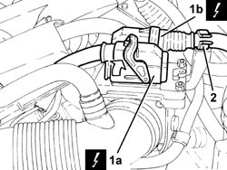
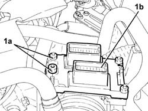
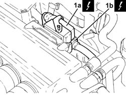
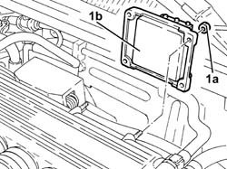

1056B82 injection/ignition system e.c.u. (one) - r + r
- Path
- Procedures > 10 ENGINE > 1056 PETROL INJECTION SYSTEM > 1056B multi-point injection system (mpi) > 1056B82 injection/ignition system e.c.u. (one) - r + r
- Kind
- repair procedure (removal / refitting; the operation number is the code)
- Applies to
- engines: 1.6 TS, 2.0 TS, 3.2 V6; all production periods
- Interactive page
- https://sloeber94.github.io/elrnDB-a147/en/#/3024841
Applies to: engines: 1.6 TS; all production periods
 Removing
Removing
 Refitting
RefittingEnsure that the ignition key is in the OFF postition, then disconnect the battery negative terminal.
 | Name | Connector |
|---|---|---|
- | Battery |
1. Disconnect electrical connections (1a) and (1b) from the injection-ignition control unit.
| Name | Connector |
|---|---|---|
1a | Engine management ECU |
| Name | Connector |
|---|---|---|
1b | Engine management ECU |
2. Release the electrical wiring from the fastening on the ignition/injection system control unit mount.

Applies to: engines: 1.6 TS; all production periods
1. Undo nuts (1a) and remove the single injection/ignition control unit (1b).

Applies to: engines: 1.6 TS; all production periods
Refitting
RemovingApplies to: engines: 1.6 TS; all production periods
Place the single injection/ignition system control unit back in its housing and secure it by tightenng the bolts to the specified torque.
 | Fastening | Component | Ø | Value (daNm) |
|---|---|---|---|---|
- | Nut | INJECTION/IGNITION SYSTEM E.C.U. | M6 | (Support side) 0.8÷1.1 |
Connect the electrical connections to the injection-ignition control unit and secure the electrical wiring to the ignition/injection system control unit mount.
Connect the battery terminal (-).
Applies to: engines: 2.0 TS; all production periods
Removing
RefittingEnsure that the ignition key is in the OFF postition, then disconnect the battery negative terminal.
| Name | Connector |
|---|---|---|
- | Battery |
1. Disconnect electrical connections (1a) and (1b) from the injection-ignition control unit.
| Name | Connector |
|---|---|---|
1a | Engine management ECU |
| Name | Connector |
|---|---|---|
1b | Engine management ECU |
2. Release the electrical wiring from the fastening on the ignition/injection system control unit mount.

Applies to: engines: 2.0 TS; all production periods
1. Undo nuts (1a) and remove the single injection/ignition control unit (1b).

Applies to: engines: 2.0 TS; all production periods
Refitting
RemovingApplies to: engines: 2.0 TS; all production periods
Place the single injection/ignition system control unit back in its housing and secure it by tightenng the bolts to the specified torque.
| Fastening | Component | Ø | Value (daNm) |
|---|---|---|---|---|
- | Nut | INJECTION/IGNITION SYSTEM E.C.U. | M6 | (Support side) 0.8÷1.1 |
Connect the electrical connections to the injection-ignition control unit and secure the electrical wiring to the ignition/injection system control unit mount.
Connect the battery terminal (-).
Applies to: engines: 3.2 V6; all production periods
Removing
RefittingEnsure that the ignition key is in the OFF position, then disconnect the negative battery terminal (-).
| Name | Connector |
|---|---|---|
- | Battery |
1. Disconnect the electrical connections (1a) and (1b) from the injection/ignition system control unit.
| Name | Connector |
|---|---|---|
1a | Engine management ECU |
| Name | Connector |
|---|---|---|
1b | Engine management ECU |

Applies to: engines: 3.2 V6; all production periods
1. Undo nuts (1a) and remove injection/ignition control unit (1b).

Applies to: engines: 3.2 V6; all production periods
Refitting
RemovingPlace the injection/ignition system control unit back in its housing and fix it using the bolts.
Connect the electrical connections to the fuel injection/ignition control unit.
Connect the negative (-) battery terminal.
Topics linked from this page (4)
- 1056B81 run electronic ignition/injection control unit (single) self-learning procedure
- A1B Battery ( Connectors )
- M10A Engine management ECU ( Connectors )
- M10B Engine management ECU ( ENGINE )
Topics that link to this page (21)
- B10 ENGINE DOES NOT START / UNDER NO CIRCUMSTANCES
- B13 ENGINE STARTS WITH DIFFICULTY'
- B20 ENGINE STARTS, AND CUTS OUT STRAIGHT AWAY
- D01 ENGINE NOT RUNNING SMOOTHLY / (HESISTANT)
- D02 ENGINE NOT RUNNING SMOOTHLY / (LOSING POWER)
- D03 ENGINE NOT RUNNING SMOOTHLY / (IRREGULAR OPERATION)
- D05 ENGINE DOES NOT PRODUCE BEST PERFORMANCE
- D10 ENGINE IDLE IRREGULAR
- D21 ENGINE CUTS OUT WHILST DRIVING
- D70 CRUISE CONTROL NOT WORKING UNDER ANY CONDITIONS
- D71 CRUISE CONTROL RECALL CONTROL NOT WORKING
- D72 CRUISE CONTROL SET+ CONTROL NOT WORKING
- D73 CRUISE CONTROL DOES NOT GO OFF WHEN THE CLUTCH PEDAL IS PRESSED
- D74 CRUISE CONTROL SYSTEM DOES NOT GO OFF WHEN BRAKE PEDAL PRESSED
- D75 THE CRUISE CONTROL SET- CONTROL IS NOT WORKING
- K25 ENGINE COOLANT TEMPERATURE GAUGE NOT WORKING
- K26 ENGINE COOLANT OVERHEATING WARNING LIGHT NOT WORKING
- K30 MINIMUM ENGINE OIL PRESSURE WARNING LIGHT NOT WORKING
- K52 CODE FAILURE WARNING LIGHT ON
- Z54 MISFIRE ERROR IN ONE CYLINDER
- 0510A10 cylinder compression - check for loose spark plugs or injectors